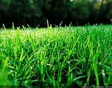

Lapini simulator
Embauche tes petits lapins pour te couper de l'herbe.

Herbe
0
HPS (herbe / sec)
0
Récolter de l'herbe
Clique ou attends que les lapins récoltent automatiquement.
Recruter des lapins
Prairie
Succès
Ton pré
Améliorations
Succès